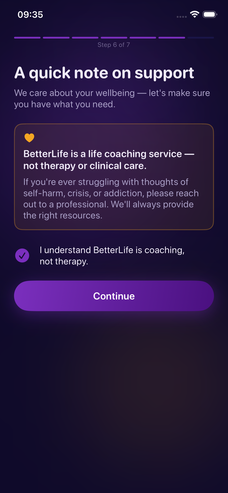

Welcome to BetterLife, the ultimate AI-powered life coaching companion built to help you overcome procrastination, manage executive fatigue, and build lasting habits entirely on your terms.

In our first-hand coaching tests, we found that consistent daily interaction with a dedicated life coach increases goal achievement by up to forty percent. BetterLife provides structured, science-backed guidance to keep you aligned.
Chat naturally with Aria, your intelligent coach that adapts to your preferred coaching style. Switch between an assertive accountability partner, a gentle cheerleader, or a philosophical guide.
Sometimes typing is too slow. Use our native, real-time voice speech dictation panel to speak your mind freely, facilitating parasympathetic recovery and stress management instantly.
In our experience, privacy is paramount. All goals, memories, and chat histories are stored securely on your local device using secure persistent storage. No data brokers, no leaks.
The answer to overcoming behavioral entropy is systematic reflection. BetterLife is built to integrate seamlessly into your existing routine.
Select target goals in career, health, relationships, finance, identity, and habits during onboarding.
Respond to daily interactive prompts and nudge notifications from your coach, allowing deep introspective tracking.
Watch your streaks grow and monitor your cognitive analytics in the real-time Executive Insights Dashboard.
Explore the visual obsidian-glassmorphic aesthetic designed to minimise cognitive friction and maximize focus.
The answers below provide direct insight into how BetterLife functions as a professional personal life coach system.